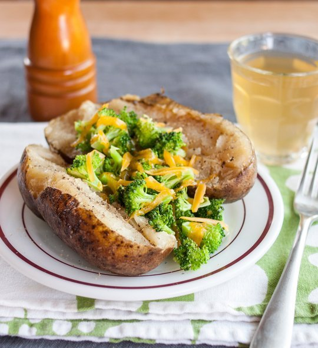

As long as there are a few potatoes in the pantry, I know that I have at least one option for dinner. Whether topped with a simple pat of butter or a scoop of hearty chili, baked potatoes are a favorite no-brainer meal when I just want something easy and warm. Here are three different ways to make them.
Ingredients:
Directions:
Serves 0
Nutritional Profile
World's Healthiest Foods Rating | |||||
| Calories | 161 | ||||
|---|---|---|---|---|---|
| Total Fat | 0.2 g | ||||
| Cholesterol | 0 mg | ||||